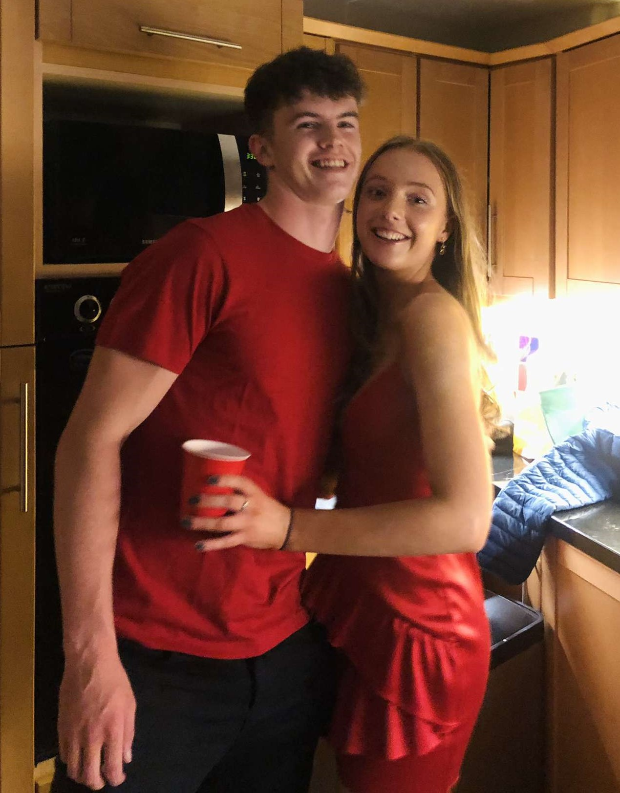

Cian and Nyelly
Made this just to share my thoughts cause ILY and I'm bored on a Sunday lol
Some of my Notes that I've written over the past few weeks ily
What we have is, in my eyes, definitely worth fighting for. Across all aspects of life the best things come after hard work and sacrifice. Perseverance through hard times and seeing the rewards only make the good times sweeter. Like training hard all year and fighting as hard as you can to end up winning championship or you for instance fighting so hard during college despite so many things against you and to still end up with a first. That fight and perseverance that you have within you is something I'm so proud of and I really admire that in you. I really believe that what we have is not worth giving up on because of a few bad months. We are at our lowest point ever now but I firmly believe the only way is up from here if we get back together. I've learned so much over the last few weeks and above all I think the biggest thing I've learned is that I took what we had for granted. I became complacent and too comfortable in the relationship and this led to bad habits forming like not making enough effort and not treating you the way you deserve to be treated. The best things in life, from my experience, are things you have to work the hardest for and I promise I will work harder than ever to make this work because I know what we have is worth it
Actions speak much louder than words and we can sit here talking about what we want but at the end of the day our future trust will be built on the actions we both take. That started with the cards that you wrote me for the our anniversary and my graduation. These small things meant so much to me and made me realise why I fell in love with you and why I still am in love with you so much. It reminded me of who you really are and I believe one moment on one night will not define you or us
“It is a curious thought, but it is only when you see people looking ridiculous, that you realize just how much you love them.” — Agatha Christie

Top 10 Moments
Here's a list of our vibiest times together so far!!:
- First point of interest.
- Second point is here.
- Third point goes like this.
- Fourth point is pretty cool.
- Fifth point you should know about.
- Sixth point might surprise you.
- Seventh point is another thought.
- Eighth point is interesting.
- Ninth point is also good to mention.
- Tenth and final point to share today.
CANT WAIT FOR SO MANY MORE MEMORIES LIKE THIS!!!

Fav Holiday Moments
My fav moments from our big holidays so far:
- First thought of this section.
- Second thought on my mind.
- Third interesting thought.
- Fourth idea I wanted to share.
- Fifth thing that popped up.
- Sixth random but cool thing.
- Seventh point worth mentioning.
- Eighth idea I had.
- Ninth idea just for fun.
- Tenth and final thought to wrap it up.